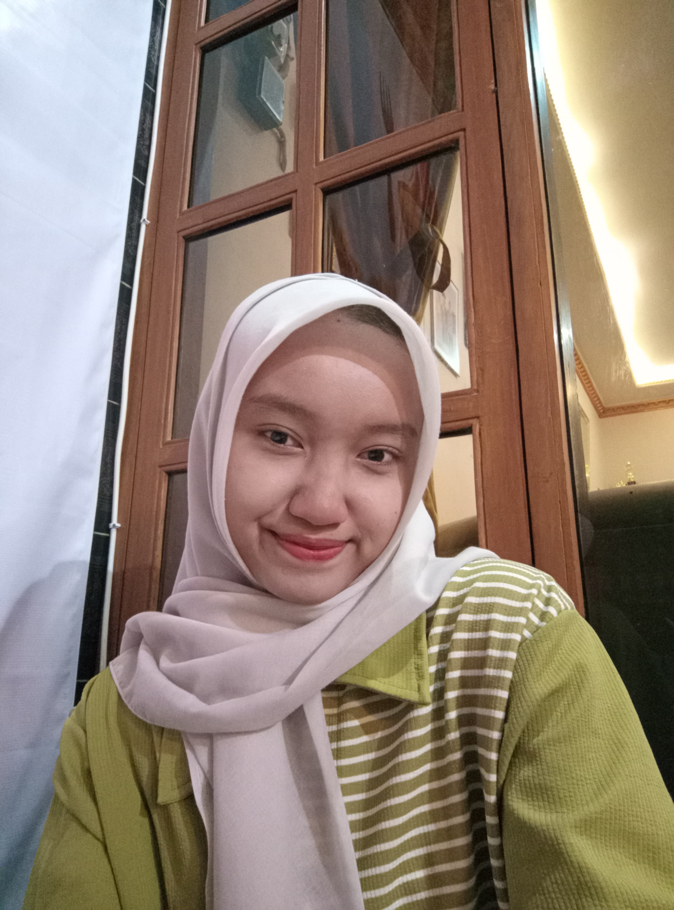

| Nama | : | Citra Amellia Maharani |
| Tempat, Tanggal Lahir | : | Ponorogo, 11 Juni 2008 |
| Alamat | : | Desa Ngrupit, Kecamatan Jenangan, Kabupaten Ponorogo |
| : | citraamellia43@gmail.com |
SMK NEGERI 1 JENANGAN
(REKAYASA PERANGKAT LUNAK)
*Klik tombol untuk menghubungi saya
Curiculum Vitae
Citra Amellia Maharani
Saya adalah Siswa SMK jurusan Rekayasa Perangkat Lunak atau RPL yang berminat dalam pengembangan perangkat lunak dan teknologi informasi. Saya berminat Praktik Kerja Lapangan atau PKL di CV Edusupe yang terletak di Madiun, Jawa Timur. Saya memiliki pemahaman dasar dalam pemrograman, pengelolaan database, serta analisis sistem. Memiliki kemampuan komunikasi yang baik, dapat bekerja dengan cepat dan efisien, serta selalu bertanggung jawab dalam segala tugas.
Hard Skils
Contoh Projek Kecil :